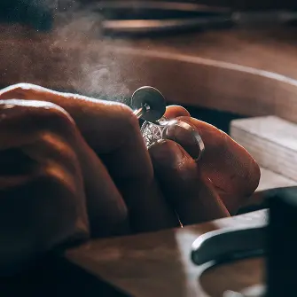

<section class="about" id="about">
    <div class="container about_container">
        <div class="about_wrapper">
            <div class="about_img-wrapper">
                <picture>
                    <source media="(min-width: 1440px)" srcset="
                            ../img/webp/about-us/Lightbox_dsk.webp 1x,
                            ../img/webp/about-us/Lightbox_dsk@2x.webp 2x">

                            <source media="(min-width: 768px)" srcset="
                            ../img/webp/about-us/Lightbox_pln.webp 1x,
                            ../img/webp/about-us/Lightbox_pln@2x.webp 2x">

                    
                </picture>
            </div>

            <div class="about-content">
                <h2 class="about-title">The Artistry Behind Handmade Jewelry</h2>
                <p class="about-text">Handmade Jewelry began as a passion project, inspired by the beauty of nature and
                    the desire to create meaningful
                    pieces. Each item is crafted with love, reflecting our commitment to sustainability and the unique
                    story of its maker.</p>
                <ul class="about-list">
                    <li class="about-item list">Inspired by Nature</li>
                    <li class="about-item hand">Handcrafted with Love</li>
                    <li class="about-item book">Every Piece Tells a Story</li>
                </ul>
            </div>
        </div>
    </div>
</section>
